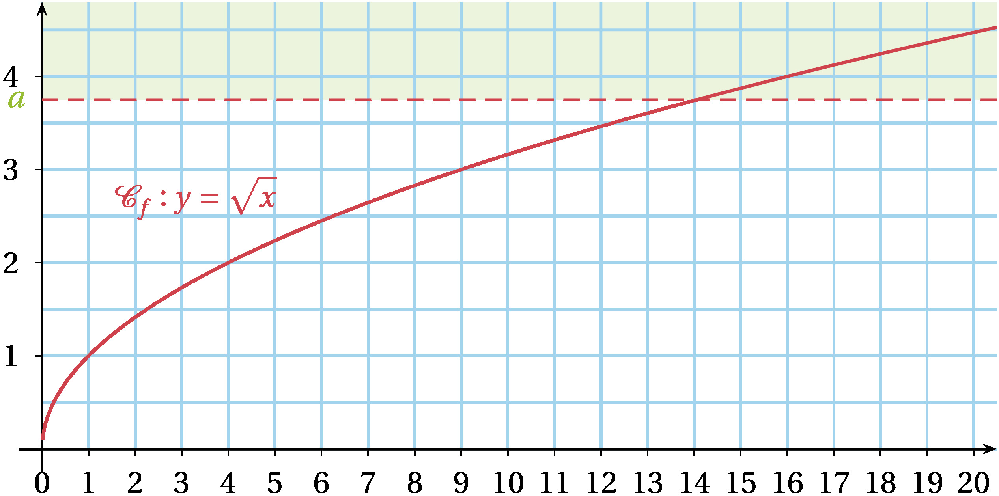
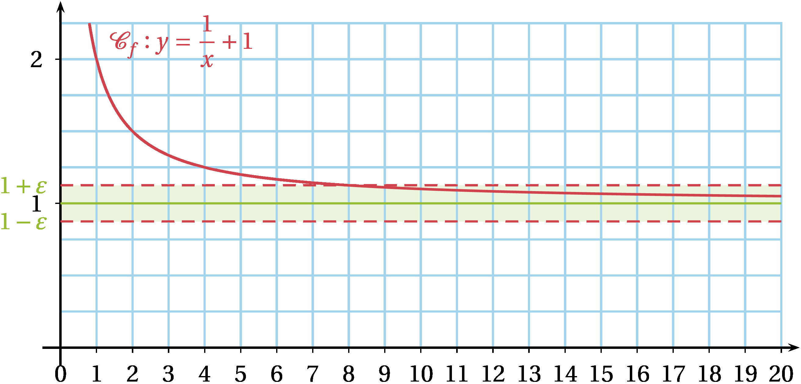
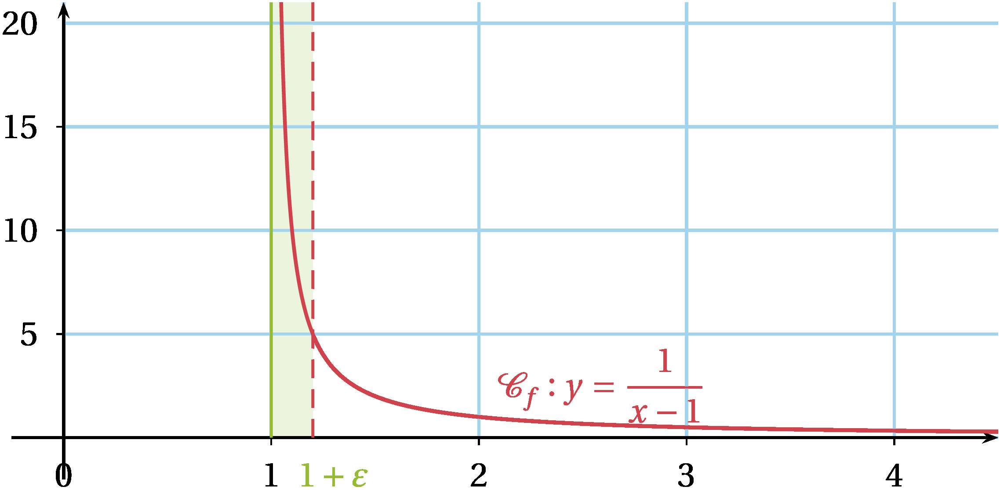
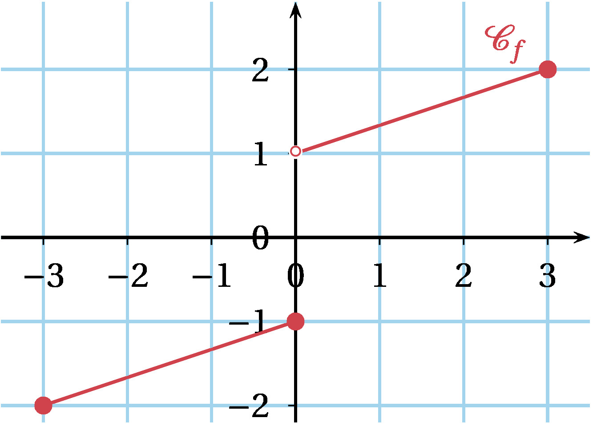
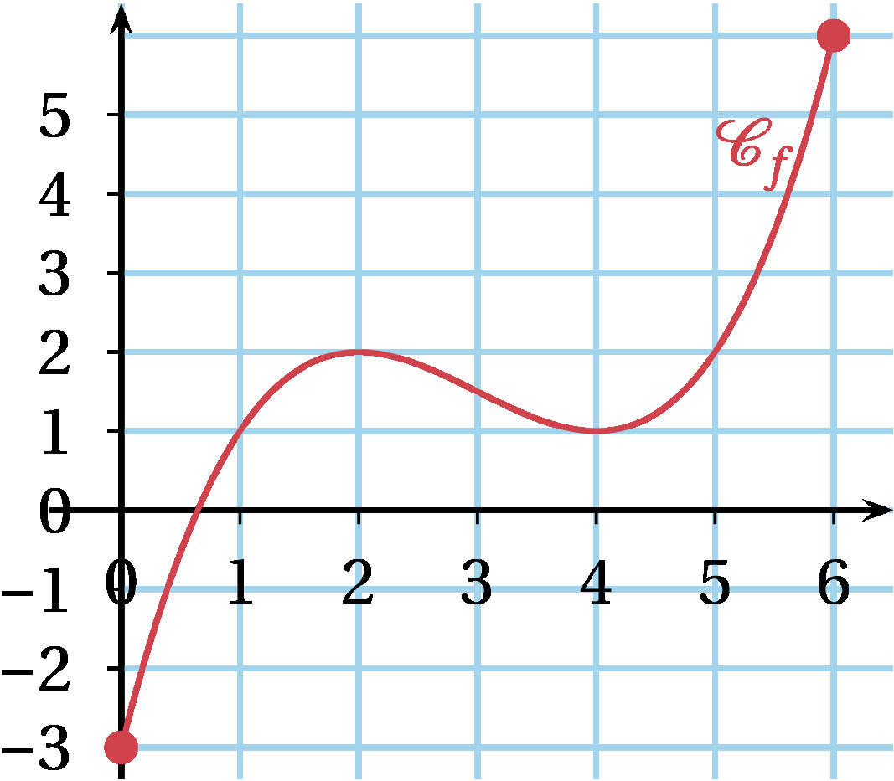
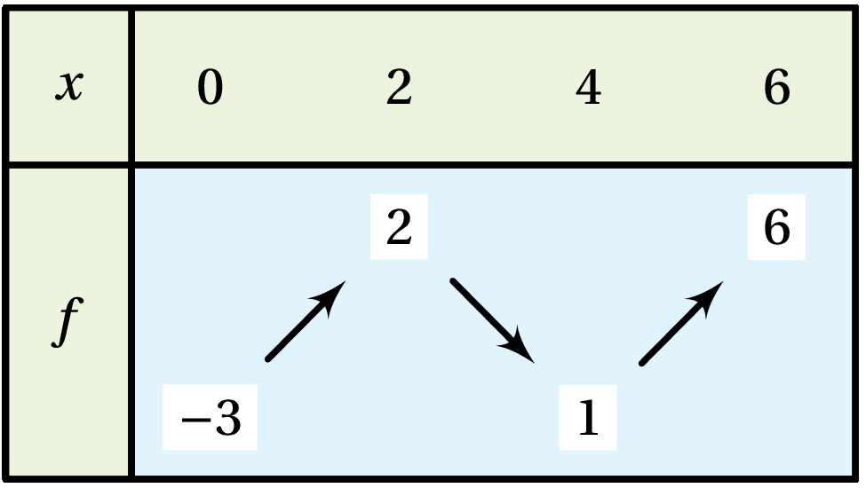
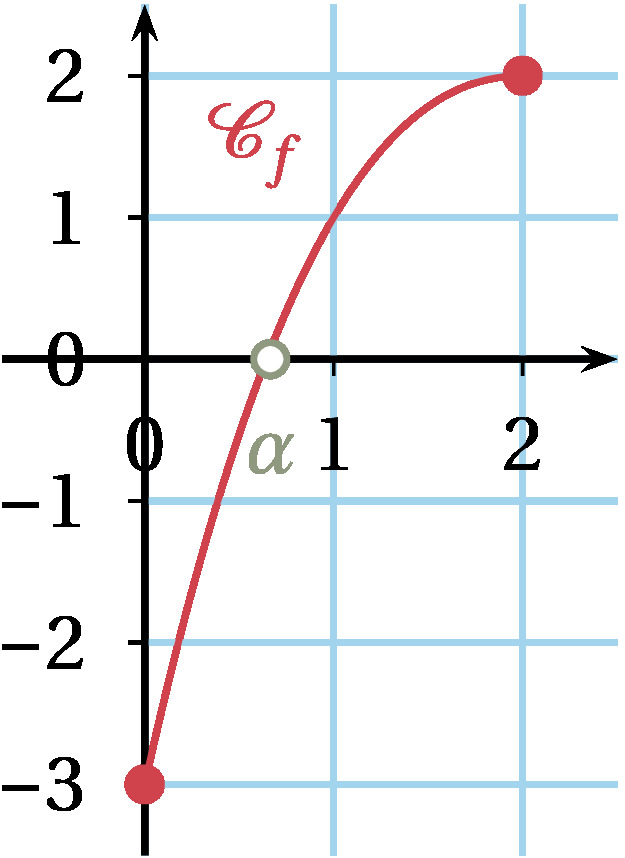
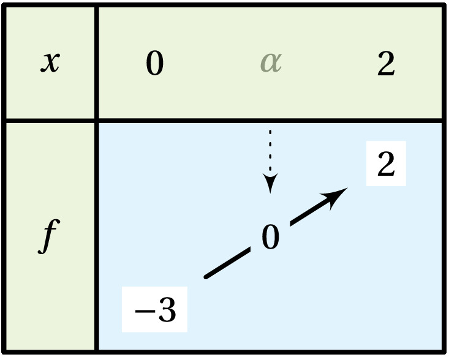
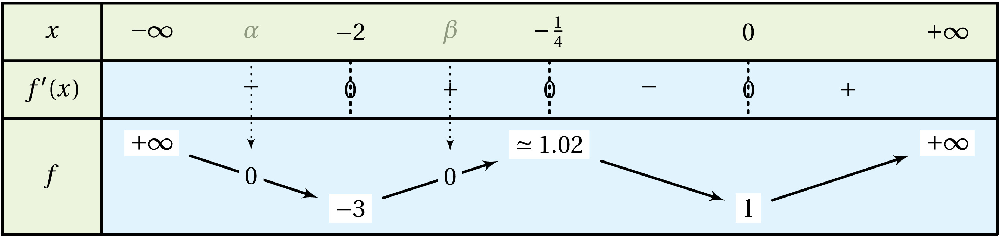

Limites de fonctions et continuité
Limite d'une fonction en l'infini
Dans toute cette partie, \(\mathcal{C}_f\) désigne la courbe représentative de la fonction \(f\) dans un repère quelconque du plan.
Limite infinie en l'infini
Définition
La fonction \(f\) a pour limite \(+\infty\) en \(+\infty\) si tout intervalle de \(\mathbb{R}\) du type \(]a~;~+\infty[\) contient toutes les valeurs de \(f(x)\) pour \(x\) assez grand. On note alors : \(\displaystyle\lim_{x\to+\infty}f(x)=+\infty\).
Exemple
Soit \(f\) la fonction racine carrée. En effet, \(\sqrt{x}\) devient aussi grand que l'on veut à mesure que \(x\) augmente.
On a \(\displaystyle\lim_{x\to+\infty}\sqrt{x}=+\infty\).
Soit un intervalle ouvert \(I=]a~;~+\infty[\). Alors, \(f(x)\) sera toujours dans \(I\) pour \(x\) assez grand.
Graphiquement, si on considère le demi-plan supérieur de frontière une droite d'équation \(y=a\), il existe toujours une valeur de \(a\) au delà de laquelle \(\mathcal{C}_f\) ne sort plus de ce demi-plan.

Remarque
-
On définit de façon analogue : \(\displaystyle\lim_{x\to +\infty}f(x)=-\infty\), \(\displaystyle\lim_{x\to -\infty}f(x)=+\infty\) et \(\lim_{x\to -\infty}f(x)=-\infty\).
-
Il existe des fonctions qui n'admettent pas de limite en l'infini. Par exemple, les fonctions sinus et cosinus n'admettent de limite ni en \(+\infty\), ni en \(-\infty\).
-
Une fonction qui tend vers \(+\infty\) lorsque \(x\) tend vers \(+\infty\) n'est pas forcément croissante(voir observations figure 5)
Limite finie en l'infini
Définition
Soit \(f\) une fonction définie au moins sur un intervalle de \(\mathbb{R}\) du type \(]a~;~+\infty[\).
La fonction \(f\) a pour limite \(\ell\) en \(+\infty\) si tout intervalle ouvert contenant \(\ell\) contient toutes les valeurs de \(f(x)\) pour \(x\) assez grand. On note alors : \(\displaystyle\lim_{x\to+\infty}f(x)=\ell\).
Exemple
Soit \(f\) la fonction définie sur \(]0~;~+\infty[\) par \(f(x)=\dfrac{1}{x}+1\).
L'inverse de \(x\) se rapproche de \(0\) à mesure que \(x\) augmente. On a donc \(\displaystyle\lim_{x\to+\infty}\left(\dfrac{1}{x}+1\right)=1\).
Soit un intervalle ouvert \(I\) tel que \(1\in I\). Alors, \(f(x)\) sera toujours dans \(I\) pour \(x\) assez grand. Graphiquement, aussi étroite que soit une bande parallèle à la droite d'équation \(y=1\) et qui la contient, il existe toujours une valeur de \(x\) au delà de laquelle \(\mathcal{C}_f\) ne sort plus de cette bande.

Définition Asymptote horizontale
La droite d'équation \(y=\ell\) est asymptote horizontale à \(\boldsymbol{\mathcal{C}_f}\) en \(\boldsymbol{+\infty}\) si \(\displaystyle\lim_{x\to+\infty} f(x)=\ell\).
Remarque
On définit de façon analogue \(\displaystyle\lim_{x\to-\infty} f(x)=\ell\) qui caractérise une asymptote horizontale à \(\mathcal{C}_f\) en \(-\infty\) d'équation \(y=\ell\).
Exemple
On a vu précédemment que \(\displaystyle\lim_{x\to+\infty}\left(\dfrac{1}{x}+1\right)=1\). On a aussi \(\displaystyle\lim_{x\to-\infty}\left(\dfrac{1}{x}+1\right)=1\).\ Donc, la droite d'équation \(y=1\) est asymptote horizontale à la courbe \(\mathcal{C}_f\) en \(+\infty\) et en \(-\infty\) .
Limites des fonctions de référence en \(\infty\)
Propriété Limites finies des fonctions usuelles en \(\pm\infty\)
Soit \(n\) un entier naturel non nul.
-
\(\displaystyle\lim_{x\to+\infty}\sqrt{x}=\displaystyle\lim_{x\to+\infty}x^n=+\infty\)
-
\(\displaystyle\lim_{x\to-\infty}x^n=\left\{ \begin{array}{ll} +\infty & \text{pour~} n \text{~pair} \\ -\infty & \text{pour~} n \text{~impair} \end{array} \right.\)
-
\(\displaystyle\lim_{x\to+\infty}\frac{1}{\sqrt{x}}=\displaystyle\lim_{x\to+\infty}\frac{1}{x^n}=0\)
-
\(\displaystyle\lim_{x\to-\infty}\frac{1}{x^n}=0\)
-
\(\displaystyle\lim_{x\to-\infty} e^x=0\)
-
\(\displaystyle\lim_{x\to+\infty} e^x=+\infty\)
Limite infinie en un réel
Définition
Soit \(f\) une fonction définie sur un intervalle ouvert de \(\mathbb{R}\) du type \(]x_0-\varepsilon~;~x_0[\) ou \(]x_0~;~x_0+\varepsilon[\).
La fonction \(f\) a pour limite \(+\infty\) en \(x_0\) si tout intervalle de \(\mathbb{R}\) du type \(]A~;~+\infty[\) contient toutes les valeurs de \(f(x)\) pour \(x\) assez proche de \(x_0\). On note alors : \(\displaystyle\lim_{x\to x_0}f(x)=+\infty\).
Exemple
Soit \(f\) la fonction définie sur \(]1~;~+\infty[\) par \(f(x)=\dfrac{1}{x-1}\).
Si \(x\) tend \(1\), alors \(x-1\) tend vers \(0\) et son inverse tend vers \(+\infty\).On a \(\displaystyle\lim_{x\to 1}\dfrac{1}{x-1}=+\infty\).
Soit un intervalle ouvert \(I=]1~;~1+\varepsilon[\). Alors, \(f(x)\) sera toujours dans \(I\) pour \(x\) assez proche de \(x_0\). Graphiquement, \(\mathcal{C}_f\) peut être aussi proche que l'on veut de la droite d'équation \(x=1\).

Définition Asymptote verticale
La droite d'équation \(x=x_0\) est asymptote verticale à \(\boldsymbol{\mathcal{C}_f}\) si \(\displaystyle\lim_{x\to x_0} f(x)=\pm\infty\).
Exemple
On a vu précédemment que \(\displaystyle\lim_{x\to 1}\dfrac{1}{x-1}=+\infty\).\ Donc, la droite d'équation \(x=1\) est asymptote verticale à l'hyperbole \(\mathcal{C}_f\).
Remarque
-
Lorsque \(x\) tend vers \(x_0\), cela peut parfois se faire en augmentant ou en diminuant. On parle alors de limite de \(f\) à gauche (resp. droite) en \(x_0\) qu'on note \(\displaystyle\lim_{\substack{x\to x_0\\ x<x_0}}f(x)\) (resp. \(\displaystyle\lim_{\substack{x\to x_0\\ x>x_0}}f(x)\)).
-
Une fonction admet une limite en \(x_0\) si, et seulement si, \(f\) admet des limites à droite et à gauche en \(x_0\) qui sont égales (ce qui n'est pas toujours le cas).
-
Une fonction peut très bien ne pas avoir de limite du tout en un point.
Par exemple, la fonction \(x \mapsto \sin \dfrac{1}{x}\) n'a pas de limite en 0.
Propriété Limites finies des fonctions usuelles en 0
Soit \(n\) un entier naturel non nul.
-
\(\displaystyle\lim_{\substack{x\to 0\\ x>0}}\frac{1}{\sqrt{x}}=\displaystyle\lim_{\substack{x\to 0\\ x>0}}\frac{1}{x^n}=+\infty\)
-
\(\displaystyle\lim_{\substack{x\to 0\\ x<0}}\dfrac{1}{x^n}=\left\{ \begin{array}{ll} +\infty & \text{pour~} n \text{~pair} \\ -\infty & \text{pour~} n \text{~impair} \end{array} \right.\)
Remarque
L'aperçu de la courbe représentative d'une fonction avec une calculatrice ou un logiciel peut aider à conjecturer une limite (et donc éventuellement une asymptote à la courbe).
Soit \(f\) une fonction dont on a un aperçu du graphe \(\mathcal{C}\).
Déterminer son ensemble de définition \(\mathcal{D}\), puis conjecturer les limites aux bornes de \(\mathcal{D}\) et les asymptotes à \(\mathcal{C}\).
-
\(f:x\mapsto \dfrac{x^3-1}{x^3+1}\)
-
\(f:x\mapsto 2x-\sqrt{4x^2-1}\)
Correction
1. \(\mathcal{D}=\mathbb{R}\setminus\{-1\}\). A priori, on aurait : \(\displaystyle\lim_{x\to\pm+\infty}f(x)=1\) ; \(\displaystyle\lim_{\substack{x\to -1\\ x<-1}}f(x)=+\infty\) et \(\displaystyle\lim_{\substack{x\to -1\\ x>-1}}f(x)=-\infty\).
\(\mathcal{C}\) aurait alors une asymptote horizontale d'équation \(y=1\) en \(\pm\infty\) et une asymptote verticale d'équation \(x=-1\).
2. \(\mathcal{D}=]-\infty~;~-\tfrac{1}{2}[\,\cup\,]\tfrac{1}{2}~;~+\infty[\). On a : \(\displaystyle\lim_{x\to -1/2}f(x)=-1\) et \(\displaystyle\lim_{x\to 1/2}f(x)=1\) et, il semblerait que \(\displaystyle\lim_{x\to-\infty}f(x)=-\infty\) et \(\displaystyle\lim_{x\to +\infty}f(x)=0\).
\(\mathcal{C}\) aurait alors une asymptote horizontale d'équation \(y=0\) (l'axe des abscisses) en \(+\infty\).
Opérations sur les limites
Limite d'une somme
| \(f\) | \(g\) | \(f+g\) |
|---|---|---|
| \(\ell\) | \(\ell'\) | \(\ell+\ell'\) |
| \(\ell\) | \(\infty\) | \(\infty\) |
| \(+\infty\) | \(-\infty\) | \(-\infty\) |
| \(-\infty\) | \(-\infty\) | \(-\infty\) |
| \(+\infty\) | \(-\infty\) | \(???\) |
Limite d'un produit
\(\ell\) * \(\ell'\) : \(\ell\ell'\)
\(\ell\!\neq\!0\) * \(\infty\) : \(\infty\)
\(\infty\) * \(\infty\) : \(\infty\)
\(0\)* \(\infty\) : \(???\)
Limite d'un quotient
\(\ell\) / \(\ell'\!\neq\!0\) : \(\ell/\ell'\)
\(\ell\!\neq\!0\) / \(0\) : \(\infty\)
\(\ell\) / \(\infty\) : \(0\)
\(0\) / \(0\) / \(???\)
\(\infty\) / \(\infty\) : \(???\)
Remarque
-
\(\infty\) peut signifier \(+\infty\) ou \(-\infty\). Les règles du signe d'un produit ou d'un quotient demeurent.
-
Pour la limite de la différence \(f-g\), on considère la limite de la somme \(f+(-g)\).
quatre cas d'indétermination
-
" \(\boldsymbol{(+\infty)+(-\infty)}\) "
-
" \(\boldsymbol{0\times\infty}\) "
-
" \(\boldsymbol{\dfrac{0}{0}}\) "
-
" \(\boldsymbol{\dfrac{\infty}{\infty}}\) "
Exemple
Soit \(f:x\mapsto \frac{x-1}{x^2-4}\). Calculons les limites de \(f(x)\) aux bornes de son domaine de définition.
Limite d'une fonction composée
Fonction composée
Une composée de deux fonctions correspond à un enchaînement de deux fonctions l'une après l'autre.
Par exemple, composons la fonction \(f:x\mapsto1-x\) suivie de \(g:x\mapsto\sqrt{x}\). On peut ainsi schématiser :
\(x\) \(\,\mapsto\,\) \(1-x\) \(\,\mapsto\,\) \(\sqrt{1-x}\). \(f\) \(g\)
Cependant, on voit que la fonction \(g\) ne peut s'appliquer que si l'ensemble des images par la fonction \(f\) est inclus dans l'ensemble de définition de \(g\).
Ainsi, pour appliquer ici la racine carrée, il faut que \(1-x\geqslant0\) c'est-à-dire que \(x\leqslant1\).
La composée existe donc dans le schéma suivant où on précise les ensembles de départ et d'arrivée pour \(f\) :
\(]-\infty~;~2]\) \(\rightarrow\) \([0~;~+\infty[\) \(\rightarrow\) \(\mathbb{R}\) \(x\) \(\,\mapsto\,\) \(1-x\) \(\,\mapsto\,\) \(\sqrt{1-x}\) \(f\) \(g\)
En composant \(f\) suivie de \(g\), on a ainsi défini sur \(]-\infty~;~1]\) la fonction \(x\mapsto\sqrt{1-x}\).
Définition
Soit \(f\) une fonction définie sur \(E\) et à valeurs dans \(F\), et soit \(g\) une fonction définie sur \(F\).
La composée de \(\boldsymbol{f}\) suivie de \(\boldsymbol{g}\) est la fonction notée \(\boldsymbol{g\circ f}\) définie sur \(E\) par \(g\circ f(x)=g(f(x))\).
Remarque
Il ne faut pas confondre \(g\circ f\) et \(f\circ g\) qui sont, en général, différentes.
Exemple
En reprenant \(f\) et \(g\) de l'exemple précédent, définissons \(f\circ g\).
La composée de \(g\) suivie de \(f\) est possible en partant de l'ensemble de définition de \(g\) :
\([0~;~+\infty[\) \(\rightarrow\) \([0~;~+\infty[\) \(\rightarrow\) \(\mathbb{R}\)
\(x\) \(\,\mapsto\,\) \(\sqrt{x}\) \(\,\mapsto\,\) \(1-\sqrt{x}\)
En composant \(g\) suivie de \(f\), on a ainsi défini sur \([0~;~+\infty[\) la fonction \(x\mapsto1-\sqrt{x}\).
Théorème de composition des limites
Théorème
Soit \(h\) la composée de la fonction \(f\) suivie de \(g\) et \(\alpha\), \(\beta\) et \(\gamma\) trois réels ou \(\pm\ \infty\).
Si \(\displaystyle\lim_{x\to\alpha} f(x)=\beta\) et \(\displaystyle\lim_{x\to\beta} g(x)=\gamma\), alors \(\displaystyle\lim_{x\to\alpha} h(x)=\gamma\).
Exemple
Déterminons la limite en \(-\infty\) de la fonction \(g\circ f\) de l'exemple précédent.
La composée de \(f:x\mapsto 1-x\) suivie de \(g:x\mapsto\sqrt{x}\) est \(h:x\mapsto \sqrt{1-x}\) définie sur \(]-\infty~;~1]\).
Or, \(\displaystyle\lim_{x\to -\infty} (1-x)=+\infty\) (par somme) et \(\displaystyle\lim_{x\to +\infty} \sqrt{x}=+\infty\) (limite de référence).
Donc, d'après le théorème de composition, \(\displaystyle\lim_{x\to -\infty} \sqrt{1-x}=+\infty\).
Méthode Déterminer une limite de fonction
On applique les propriétés d'opérations sur les limites.
Si la limite est indéterminée, " \(+\infty+(-\infty)\) ", " \(0\times\infty\) ", " \(\dfrac{\infty}{\infty}\) " ou " \(\dfrac{0}{0}\) ", on essaye de :
-
factoriser par le terme prépondérant ;
-
multiplier par la quantité conjuguée si des racines carrées interviennent ;
-
effectuer un changement de variable (voir théorème de composition des limites).
D'autres techniques existent et seront vues ultérieurement.
Exercice:
Calculer les limites suivantes :
1. \(\displaystyle\lim_{x\to+\infty}\left(\sqrt{x+1}-\sqrt{x}\right)\)
2. \(\displaystyle\lim_{x\to+\infty}\dfrac{2x^2-3x+1}{x^2-1}\)
3. \(\displaystyle\lim_{x\to4}\dfrac{x - 4}{\sqrt{x} - 2}\)
Correction
Ces limites sont indéterminées (respectivement formes " \(\infty-\infty\) ", " \(\dfrac{\infty}{\infty}\) " et " \(\dfrac{0}{0}\) ").
1. On multiplie le numérateur et le dénominateur par la quantité conjuguée de \(\sqrt{x+1}-\sqrt{x}\) :
\(\sqrt{x+1}-\sqrt{x}=\dfrac{\left(\sqrt{x+1}-\sqrt{x}\right)\left(\sqrt{x+1}+\sqrt{x}\right)}{\sqrt{x+1}+\sqrt{x}}=\dfrac{1}{\sqrt{x+1}+\sqrt{x}}\).
Or, par composition : \(\displaystyle\lim_{x\to +\infty}(x+1)=\infty\) et \(\displaystyle\lim_{x\to +\infty}\sqrt{x}=+\infty\) donc \(\displaystyle\lim_{x\to +\infty}\sqrt{x+1}=\infty\).
Et, par somme : \(\displaystyle\lim_{x\to+\infty}\left(\sqrt{x+1}+\sqrt{x}\right)=+\infty\). Donc, par inverse : \(\displaystyle\lim_{x\to+\infty}\dfrac{1}{\sqrt{x+1}+\sqrt{x}}=0\).
2. Divisons le numérateur et le dénominateur par \(x^2\). Alors, \(\dfrac{2x^2-3x+1}{x^2-1}= \dfrac{2-\tfrac{3}{x}+\tfrac{1}{x^2}}{1-\tfrac{1}{x^2}}\).
Or, par somme : \(\displaystyle\lim_{x\to+\infty}\left(2-\dfrac{3}{x}+\dfrac{1}{x^2}\right)=2\) et \(\displaystyle\lim_{x\to+\infty}\left(1-\dfrac{1}{x^2}\right)=1\).
Donc, par quotient : \(\displaystyle\lim_{x\to+\infty}\dfrac{2-\tfrac{3}{x}+\tfrac{1}{x^2}}{1-\tfrac{1}{x^2}}=2\).
3. Changeons de variable en posant \(u=\sqrt x\). Si \(x\) tend vers \(4\), alors \(u\) tend vers \(2\).
\(\dfrac{x-4}{\sqrt x-2}=\dfrac{u^2-4}{u-2}=\dfrac{(u+2)(u-2)}{u-2}=u+2\) pour \(u\neq2\). Donc, par somme : \(\displaystyle\lim_{u\to2}(u+2)=4\).
Limites et comparaison
Théorème de comparaison
Théorème
Soit \(f\) et \(g\) deux fonctions telles que \(f(x)\leqslant g(x)\) sur un intervalle \(]\alpha~;~+\infty[\) de \(\mathbb{R}\).
-
\(\displaystyle\lim_{x\to+\infty} f(x)=+\infty\Rightarrow\displaystyle\lim_{x\to+\infty} g(x)=+\infty\).
-
\(\displaystyle\lim_{x\to+\infty} g(x)=-\infty\Rightarrow\displaystyle\lim_{x\to+\infty} f(x)=-\infty\).
Soit \(f\) et \(g\) deux fonctions telles que \(f(x)\leqslant g(x)\) sur un intervalle \(]-\infty~;~\beta[\) de \(\mathbb{R}\).
-
\(\displaystyle\lim_{x\to-\infty} f(x)=+\infty\Rightarrow\displaystyle\lim_{x\to-\infty} g(x)=+\infty\).
-
\(\displaystyle\lim_{x\to-\infty} g(x)=-\infty\Rightarrow\displaystyle\lim_{x\to-\infty} f(x)=-\infty\).
Soit \(f\) et \(g\) deux fonctions telles que \(f(x)\leqslant g(x)\) sur un intervalle \(]\alpha~;~\beta[\) de \(\mathbb{R}\) et \(x_0\in]\alpha~;~\beta[\).
-
\(\displaystyle\lim_{x\to x_0} f(x)=+\infty\Rightarrow\displaystyle\lim_{x\to x_0} g(x)=+\infty\).
-
\(\displaystyle\lim_{x\to x_0} g(x)=-\infty\Rightarrow\displaystyle\lim_{x\to x_0} f(x)=-\infty\).
Exemple
Déterminons la limite en \(+\infty\) et en \(-\infty\) de \(f(x)=x+\sin x\).
La limite de \(\sin x\) en \(\pm \infty\) est indéterminée donc, celle de \(f(x)\) aussi.
Mais pour tout \(x\in\mathbb{R}\), \(-1\leqslant\sin x\leqslant 1\) donc \(x-1\leqslant x+\sin x\leqslant x+1\). Ainsi :
-
De \(x-1\leqslant x+\sin x\) et \(\displaystyle\lim_{x\to +\infty} (x-1)=+\infty\), on déduit que \(\displaystyle\lim_{x\to +\infty} (x+\sin x)=+\infty\).
-
De \(x+\sin x\leqslant x+1\) et \(\displaystyle\lim_{x\to -\infty} (x+1)=-\infty\), on déduit que \(\displaystyle\lim_{x\to -\infty} (x+\sin x)=-\infty\).
Conséquence : croissance comparée
Théorème
Pour tout entier naturel \(n\), \(\displaystyle\lim_{n\rightarrow +\infty} \frac{e^x}{x^n}=+\infty\).
[Démonstration]{.underline} :
Pour tout réel \(y\), \(y<e^y\).
On pose : \(y=\frac{x}{n+1}\). L'inégalité devient: \(\frac{x}{n+1}<^{\frac{x}{n+1}}\).
La fonction \(t \mapsto t^{n+1}\) est strictement croissante sur \([0 ; +\infty[\).
Donc :
\(\left(\frac{x}{n+1}\right)^{n+1}<\left(^{\frac{x}{n+1}}\right)^{n+1} \iff \frac{x^{n+1}}{(n+1)^{n+1}}<e^x \iff \frac{x}{(n+1)^{n+1}}<\frac{e^x}{x^n}\).
Or, \(\displaystyle\lim_{x\rightarrow+\infty} \frac{x}{(n+1)^{n+1}}=+\infty\), donc d'après le théorème de comparaison, \(\displaystyle\lim_{x\rightarrow+\infty} \frac{e^x}{x^n}=+\infty\).
Théorème d'encadrement dit " des gendarmes "
Théorème
Soit deux réels \(\alpha\) et \(\ell\) et trois fonctions \(f\), \(g\) et \(h\) telles que, pour \(x>\alpha\), on a \(f(x)\leqslant g(x)\leqslant h(x)\).
Si \(\displaystyle\lim_{x\rightarrow+\infty}f(x)=\displaystyle\lim_{x\rightarrow+\infty}h(x)=\ell\), alors \(\displaystyle\lim_{x\rightarrow+\infty}g(x)=\ell\).
Remarque
On a, comme pour le théorème de comparaison précédent, deux théorèmes analogues lorsque \(x\) tend vers \(-\infty\) et lorsque \(x\) tend vers un réel \(x_0\).
Exemple
Déterminons la limite en \(-\infty\) de \(f(x)=\dfrac{x\cos x}{x^2+1}\).
La limite de \(\cos x\) en \(-\infty\) est indéterminée. Donc celle de \(f(x)\) aussi.
Cependant pour tout \(x\) réel strictement négatif, \(-1\leqslant\cos x\leqslant 1\) donc \(x\leqslant x\cos x\leqslant -x\).
Et en divisant membre à membre par \(x^2+1>0\) on a : \(\dfrac{x}{x^2+1}\leqslant \dfrac{x\cos x}{x^2+1}\leqslant \dfrac{-x}{x^2+1}\).
Pour \(x\in\mathbb{R}^*\), \(\dfrac{x}{x^2+1} = \dfrac{1}{x+\tfrac{1}{x}}\).
Or, \(\displaystyle\lim_{x\rightarrow-\infty}\left(x+\frac{1}{x}\right) = -\infty\) donc \(\displaystyle\lim_{x\rightarrow-\infty}\dfrac{x}{x^2+1} = \displaystyle\lim_{x\rightarrow-\infty}\dfrac{-x}{x^2+1}=0\).
Donc, d'après le théorème des gendarmes, \(\displaystyle\lim_{x\rightarrow-\infty}\dfrac{x\cos x}{x^2+1}=0\).
Continuité d'une fonction
Définition
Soit \(f\) une fonction définie sur un intervalle \(I\) et un réel \(x_{0}\in I\).
-
\(f\) est continue en \(x_{0}\) si \(\displaystyle\lim_{x\to x_0}f(x)=f(x_0)\).
-
\(f\) est continue sur \(\boldsymbol{I}\) si, pour tout \(x\in I\), \(f\) est continue en \(x\).
Remarque
On peut considérer qu'une fonction est continue sur un intervalle \(I\) si sa courbe représentative sur \(I\) peut être tracée entièrement sans lever le crayon.
Propriété
-
Les fonctions usuelles (affines, carré, inverse, racine carrée, valeur absolue) sont continues sur tout intervalle inclus dans leur ensemble de définition.
-
Toute fonction construite algébriquement (par somme, produit, inverse ou composée) à partir de fonctions usuelles est continue sur tout intervalle de son ensemble de définition.
-
On convient qu'une flèche oblique dans un tableau de variation traduit la continuité et la stricte monotonie de la fonction sur l'intervalle considéré.
-
Une fonction dérivable sur un intervalle est continue sur cet intervalle.
Remarque
Attention, la réciproque de cette dernière propriété est fausse.\ Par exemple, la fonction valeur absolue \(x\mapsto |x|\) est continue en 0 mais non dérivable en 0.
Exemple
Par convention, une fonction est continue là où elle est tracée. S'il n'y a pas continuité en \(x_0\) :
-
le symbole [\(\bullet\)]{style="color: B2"} indique le point de la courbe de coordonnées \((x_0~;~f(x_0))\) ;
-
le symbole [\(\bullet\)]{style="color: white"}[\(\boldsymbol{\circ}\)]{style="color: B2"} indique un point qui n'appartient pas à la courbe mais dont l'ordonnée est égale à la limite à gauche ou à droite en \(x_0\).
Soit la fonction \(f\) représentée ci-dessous.

\(f\) est " affine par morceaux ". \(\mathcal{C}_f\) a un " saut " en 0 donc \(f\) n'est pas continue sur \([-3~;~3]\) mais elle est continue sur \([-3~;~0]\) et \(]0~;~3]\). En effet, on a \(f(0)=-1\) mais \(\displaystyle\lim_{\substack{x\to 0\\ x>0}} f(x)=1\).
Théorème des valeurs intermédiaires
Théorème Cas général
Soit \(f\) une fonction définie sur un intervalle \(I\) contenant deux réels \(a\) et \(b\) tels que \(a<b\).
Si \(f\) est continue sur \([a~;~b]\), alors pour tout réel \(k\) compris entre \(f(a)\) et \(f(b)\), il existe au moins un réel \(c\) appartenant à \([a~;~b]\) tel que \(f(c)=k\).
Remarque
\(f\) prend au moins une fois toute valeur intermédiaire entre \(f(a)\) et \(f(b)\).
Autrement dit, l'équation \(f(x)=k\) a au moins une solution dans \([a~;~b]\) et, sur \([a~;~b]\), la courbe représentative de \(f\) coupe la droite d'équation \(y=k\) en un point au moins.
Exemple
Soit \(f\) la fonction définie sur \([0~;~6]\) par \(f(x)=\dfrac{x^3}{4}-\dfrac{9}{4}x^2+6x-3\).

On dresse le tableau de variation de \(f\).
\(f\) admet pour minimum \(-3\) et pour maximum 6.
\(f\) est continue sur \([0~;~6]\).

Donc, d'après le théorème des valeurs intermédiaires, \(f\) prend toutes les valeurs de \([-3~;~6]\). En particulier, l'équation \(f(x)=0\) a au moins une solution dans \([0~;~6]\).
Théorème Cas d'une fonction strictement monotone
Soit \(f\) une fonction définie sur un intervalle \(I\) contenant deux réels \(a\) et \(b\) tels que \(a<b\).
Si \(f\) est continue et strictement monotone sur \([a~;~b]\), alors pour tout réel \(k\) compris entre \(f(a)\) et \(f(b)\), il existe un unique réel \(c\) appartenant à \([a~;~b]\) tel que \(f(c)=k\).
Exemple
Reprenons la fonction \(f:x\mapsto\dfrac{x^3}{4}-\dfrac{9}{4}x^2+6x-3\).


Sur \([0~;~2]\), \(f\) est continue, strictement croissante et admet pour minimum \(-3\) et maximum \(2\).
Donc, \(f\) prend une fois, et une seule, toutes les valeurs intermédiaires entre \(-3\) et 2.
En particulier, l'équation \(f(x)=0\) a une unique solution \(\alpha\) entre 0 et 2.
Remarque
Le théorème des valeurs intermédiaires s'applique aussi pour \(f\) continue sur un intervalle \(I\) de type : \([a~;~b[\), \(]a~;~b]\), \(]a~;~b[\), \([a~;~+\infty[\), \(]a~;~+\infty[\), \(]-\infty~;~b]\) ou \(]-\infty~;~b[\), \(]-\infty\ ;\ +\infty[\).
Si une borne \(a\) ou \(b\) de l'intervalle est ouverte, alors on remplace \(f(a)\) ou \(f(b)\) par la limite de \(f\) en cette borne ; si une borne de l'intervalle est \(\pm\infty\), alors on considère la limite de \(f\) en \(\pm\infty\).
Le théorème des valeurs intermédiaires (T.V.I.) est utile pour prouver l'existence d'une solution d'une équation du type \(f(x)=k\) et dénombrer ces solutions.Pour cela:
-
On dresse le tableau de variation de la fonction \(f\) ;
-
On applique le T.V.I. à chaque intervalle où la fonction est strictement monotone.
Dénombrer les solutions de l'équation (E) : \(x^4+3x^3+x^2+1=0\).
\(f:x\mapsto x^4+3x^3+x^2+1\) est une fonction polynôme de degré 4 dérivable sur \(\mathbb{R}\).
\(f'(x)=4x^3+9x^2+2x=x(4x^2+9x+2)=x(x+2)(4x+1)\) après factorisation du trinôme.
On établit alors le tableau de signes de \(f'(x)\) et de variation de \(f\) :

Sur \(]-\infty~;~-2]\), \(f\) est continue, strictement décroissante et : \(\displaystyle\lim_{x\to-\infty}f(x)=+\infty\) ; \(f(-2)=-3\).
Donc, d'après le T.V.I., l'équation (E) a une unique solution \(\alpha\) inférieure à \(-2\).
Sur \(\left[-2~;~-\frac{1}{4}\right]\) , \(f\) est continue, strictement croissante et : \(f(-2)=-3\) ; \(f\left(-\frac{1}{4}\right)\approx1,02>0\).
Donc, d'après le T.V.I., l'équation (E) a une unique solution \(\beta\) comprise entre \(-2\) et \(-\frac{1}{4}\).
Sur \(\left[-\frac{1}{4}~;~0\right]\) et \(\left[0~;~+\infty\right[\), le minimum de \(f\) est \(1>0\) donc on n'y trouve pas de solution.
Conclusion : l'équation (E) admet exactement deux solutions dans \(\mathbb{R}\).
Fonction continue et suite convergente
Théorème
Soit une fonction \(f\) définie et continue sur un intervalle \(I\) et une suite \((u_n)\) telle que pour tout entier naturel \(n\),on a : \(u_n \in I\) et \(u_{n+1}=f(u_n)\).
Si \((u_n)\) converge vers \(l\) de \(I\), alors \(f(l)=l\).
Autrement dit : \(l\) est solution de l'équation \(f(x)=x\).
Exemple
Soit la suite \((u_n)\) définie pour tout entier naturel \(n\) par \(u_0=0\) et \(u_{n+1}=\sqrt{3u_n+4}\).
On peut démontrer par récurrence que \((u_n)\) est croissante et majorée par 4. (on l'admet sur cet exemple). Donc \((u_n)\) converge (théorème de convergence des suites monotones).
la fonction \(f\) associée est \(f: x \mapsto \sqrt{3x+4}\).
\(f\) est continue sur \([-\frac{4}{3} ; +\infty[\) comme composée de fonctions continues sur cet intervalle. (\(f=g\circ h\), avec \(h : x \mapsto 3x+4\) et \(g:x \mapsto \sqrt{x}\))
Soit \(l=\displaystyle\lim_{n \to +\infty} u_n\). \(l\) est solution de l'équation : \(l=f(l) \iff l=\sqrt{3l+4}\).
Déterminons \(l\).
\(l\) existe ssi \(3l+4 \geq 0\) ssi \(l \geq -\frac{4}{3}\).
\(l=\sqrt{3l+4} \Rightarrow l^2=3l+4 \iff l^2-3l-4=0\).
\(\Delta=25\) . \(l_1=-1\) et \(l_2=4\).
Or, \(u_0=0\) et \((u_n)\) est croissante donc la seule possibilité est \(l_2=4\).
la limite de la suite \((u_n)\) est 4.
Créé: February 4, 2023